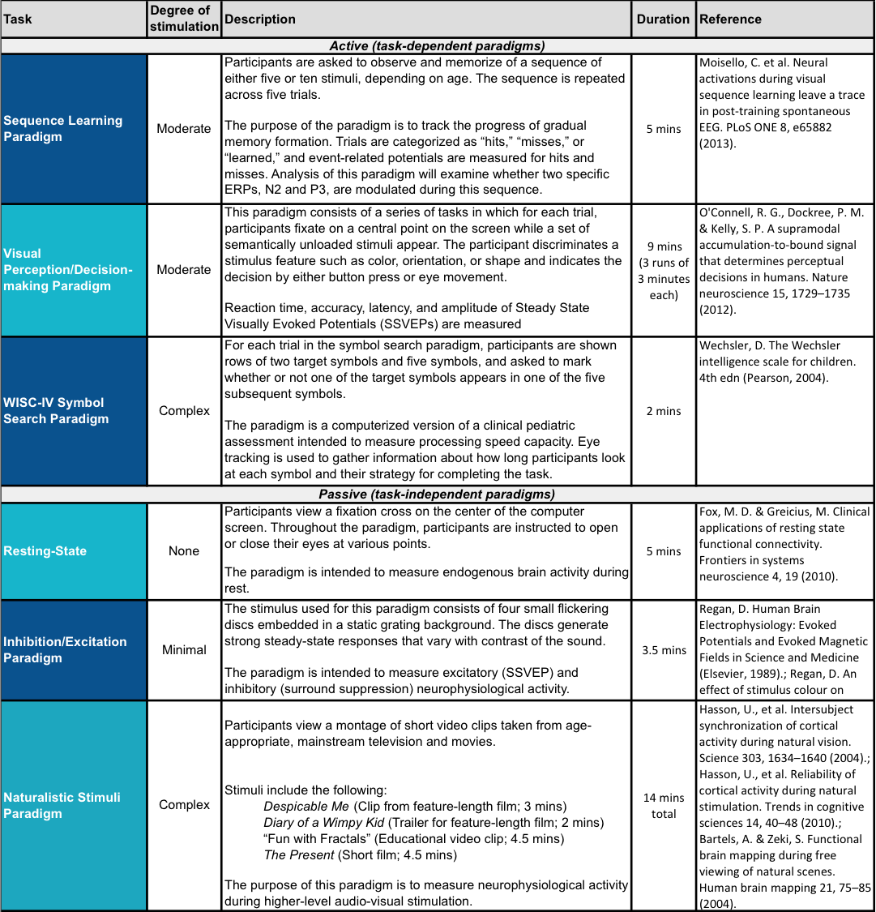

Electroencephalography Protocol¶
The EEG protocol contains the following paradigms:
The paradigms are presented in the following order:
- Resting State
- Sequence Learning Paradigm
- WISC Symbol Search (Processing Speed)
- Inhibition/Excitation Paradigm (Surround Suppression) 1
- Visual Perception/Decision-Making Paradigm (Contrast Change) 1
- Video 1
- Visual Perception/Decision-Making Paradigm (Contrast Change) 2
- Video 2
- Visual Perception/Decision-Making Paradigm (Contrast Change) 3
- Video 3
- Inhibition/Excitation Paradigm (Surround Suppression) 2
- Video 4 (The Present)
Naturalistic Stimuli - The first three videos are played in random order, and the order can be found in the block_perm file for each individual subject (.csv and .mat). "The Present" is always played last.
- Despicable Me (Duration- 2:50, full clip)
- Fun with Fractals (Duration- 2:43, Timestamp- 0:08-2:51)
- Diary of a Wimpy Kid trailer (Duration- 1:57, full clip)
- The Present (Duration- 3:23, played up to credits)
High Density EEG. High-density EEG data are recorded in a sound-shielded room at a sampling rate of 500 Hz with a bandpass of 0.1 to 100 Hz, using a 128-channel EEG geodesic hydrocel system by EGI. The recording reference is at Cz (vertex of the head). For each participant, head circumference is measured and an appropriately sized EEG net is selected. The impedance of each electrode is checked prior to recording, to ensure good contact, and is kept below 40 kOhm. Time to prepare the EEG net is no more than 30 min. Impedance is tested every 30 min of recording and saline added if needed.
Eye tracking. Concomitant with EEG recordings, eye position and pupil dilation are recorded with an infrared video-based eye tracker (iView-X Red-m, SensoMotoric Instruments GmbH) at a sampling rate of 120 Hz. This system has a spatial resolution of 0.1° and a gaze position accuracy of 0.5°. The eye tracker is calibrated with a 5-point grid before each paradigm. Specifically, participants are asked to direct their gaze in turn to a dot presented at each of 5 locations (center and four corners of the display) in a random order. In a validation step, the calibration is repeated until the error between two measurements at any point is less than 2°, or the average error for all points is less than 1°.